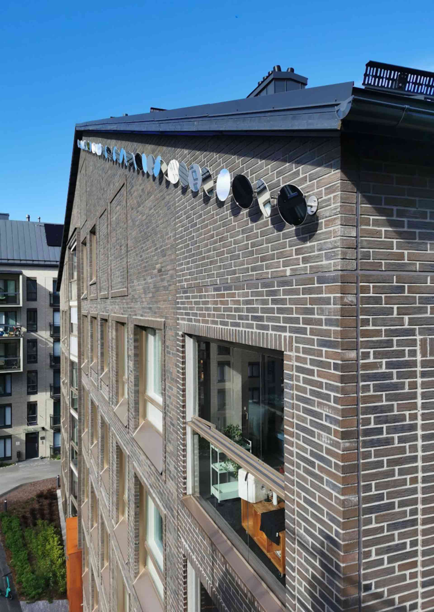
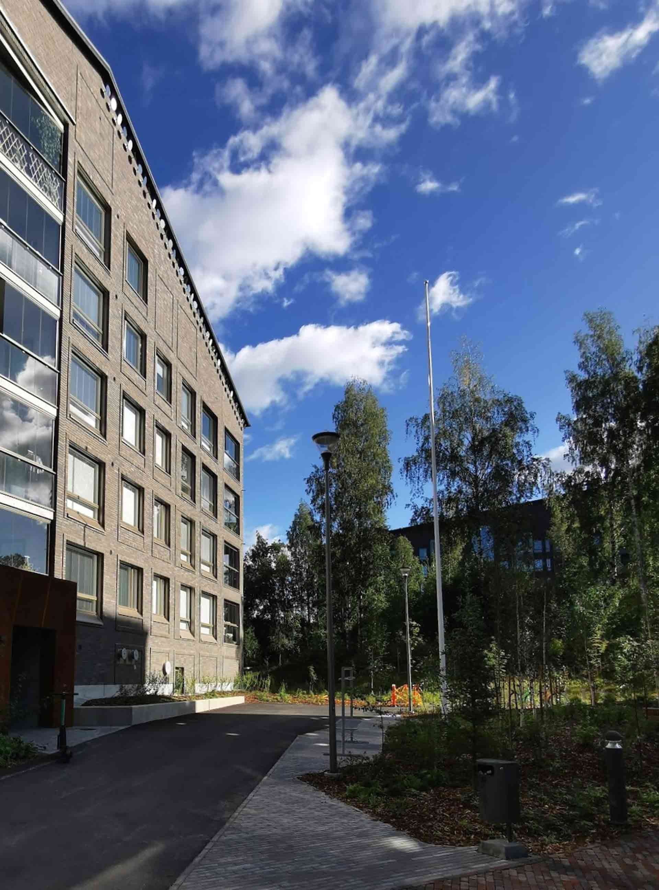
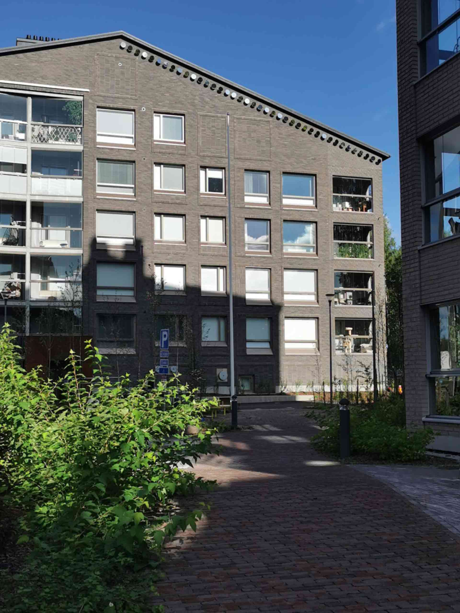

Auringonpilkut / Sunspots
As Oy Jyväskylän Hjalmar, Jyväskylä
2023
The artwork is based on the changing direction and angle of sunlight and the architecture of Metsäpiha and the
surrounding buildings in the Sydänkortteli area. The dense urban block structure leaves a significant part of
the yard in the shade in the afternoons, regardless of the season, and creates a pleasant setting for the
work. The work illustrates the earth's rotation and emphasizes the importance of sunlight in a region where
the days are quite short for part of the year.
40 round mirror elements adjusted to different angles are attached to the southwest facade of the building
slightly below the eaves line, forming an 18-meter long line the length and parallel to the entire right-hand
side. The diameter of the individual mirror is 300 mm and it is attached to the brick surface of the facade by
means of a lockable ball joint at the end of a 150 mm long metal arm.
On sunny days, direct sunlight hits the mirrors from morning until evening. Differently oriented mirrors
reflect spots of light on different sides of the yard and the facade of the opposite buildings. The spots of
light move calmly according to the change in the direction and angle of sunlight due to the earth's rotation.
Although the movement of the light spots is relatively slow, you can still follow it if you wish. More often
than not, the piece simply looks a little different every time you pay attention to it.
The angle of sunlight at midday in Jyväskylä varies between about four and fifty degrees, depending on the
season. The work constantly looks different depending on the day and season. The ornament-like motive formed
by the row of mirrors on the facade of the building reflects the blue of the sky and the movement of the
clouds, constantly changing according to the weather and lighting conditions.


